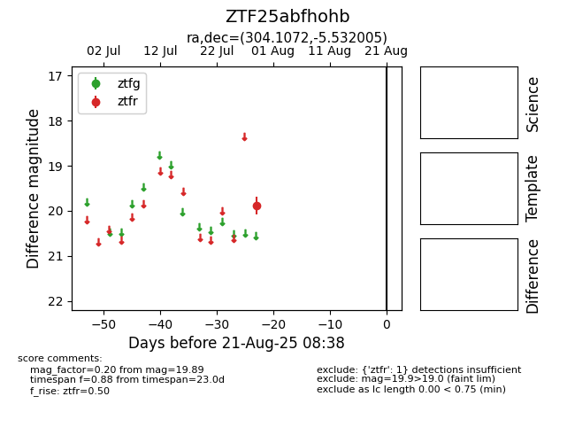

Target ZTF25abfhohb at 2025-08-21 08:38, see:
FINK: fink-portal.org/ZTF25abfhohb
Lasair: lasair-ztf.lsst.ac.uk/objects/ZTF25abfhohb
ALeRCE: alerce.online/object/ZTF25abfhohb
alt names
ZTF25abfhohb (ztf,alerce)
coordinates:
equatorial (ra, dec) = (304.1072,-5.53200)
galactic (l, b) = (37.7800,-21.40689)
photometry
last ztfr=19.89
1 ztfr detections
